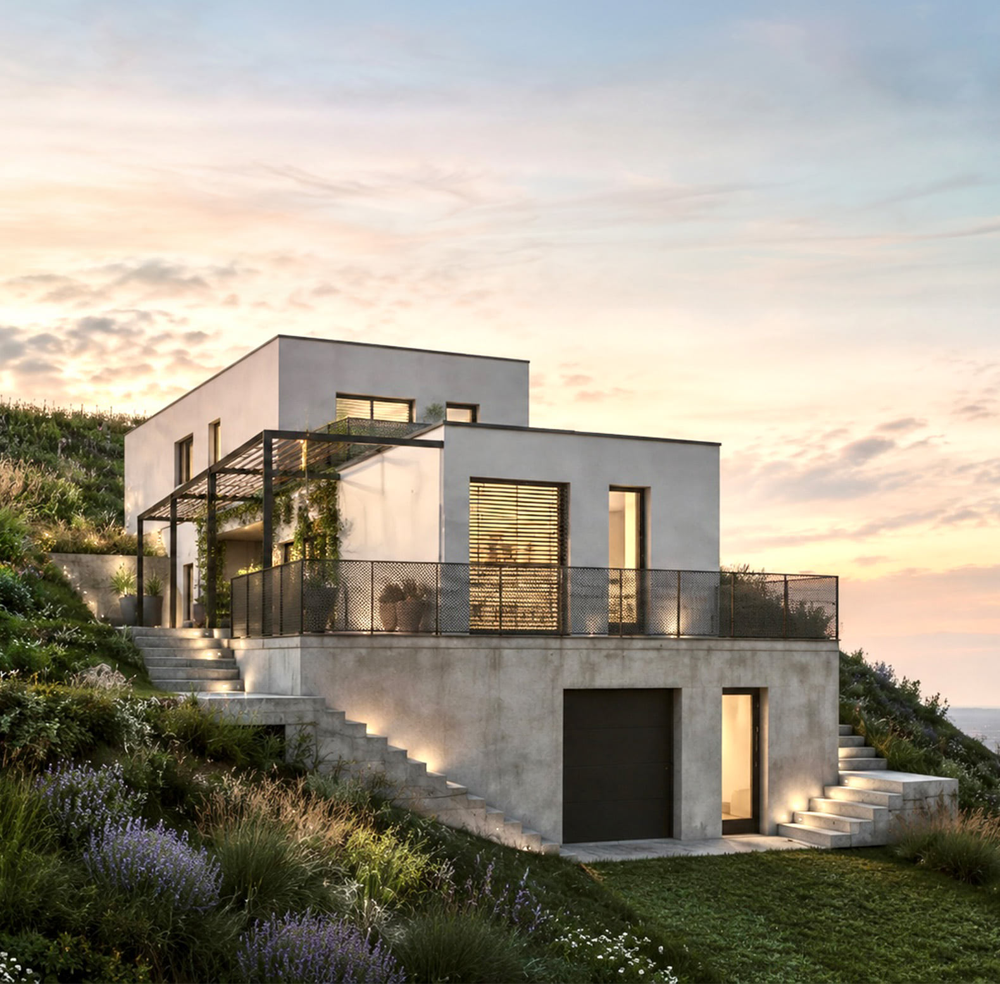

Odemykám skutečný potenciál nemovitostí.
Odborný podklad pro správné investiční rozhodnutí. Pro investory, developery, majitele nemovitostí a firmy připravující stavební záměry.

Analýza investičního a technického potenciálu nemovitosti
Každá nemovitost nabízí příležitosti.
Každá má také svá omezení a rizika.
Před koupí, rekonstrukcí nebo developerským záměrem je důležité znát nejen současný stav nemovitosti, ale také její skutečný potenciál, možnosti dalšího využití a faktory, které mohou ovlivnit její budoucí hodnotu i celkové náklady.
Analýza investičního a technického potenciálu nemovitosti propojuje architektonický, technický, legislativní a investiční pohled do jednoho odborného posouzení. Díky tomu poskytuje komplexní pohled na nemovitost a vytváří kvalitní podklad pro správné investiční rozhodnutí.
Co vám analýza pomůže objasnit
- Je možné nemovitost využít tak, jak plánujete?
- Existují technická nebo legislativní omezení, která mohou ovlivnit váš záměr?
- Nabízí nemovitost další možnosti využití nebo zvýšení její hodnoty?
- Jaká rizika mohou znamenat dodatečné investice nebo komplikace v budoucnu?
- Jaké další odborné podklady bude vhodné doplnit?
- Jaké další kroky doporučuji před konečným rozhodnutím?
- Jaké náklady nebo ekonomické dopady mohou vyplývat ze zjištěných omezení?
Skutečný potenciál nemovitosti
Posouzeni možnosti využití a návratnosti investice
Identifikace rizik
Technická, legislativní, územní i investiční rizika, která mohou zásadně ovlivnit průběh a výsledky projektu.
Doporučení dalšího postupu
Jasný návrh optimálního dalšího kroku před zahájením jakýchkoliv prací na nemovitosti.
Podklady pro optimální rozhodnutí
Nezávislý odborný pohled, který vám pomůže ušetřit náklady nebo naopak objevit příležitost.
Klid a jistota
Rozhodnete se na základě faktů, ne intuice.
Od bytů po rozsáhlé developerské projekty.
Uvedené ceny jsou orientační. Přesný rozsah spolupráce a konečná cena budou stanoveny individuálně po úvodním hovoru.
Rodinné domy, byty a menší stavební záměry
- Rodinné domy
- Stavební pozemky
- Rekonstrukce domů a bytů
- Přístavby a nástavby
- Menší stavební záměry
Bytové domy, komerční objekty a velké projekty
- Bytové domy
- Komerční objekty
- Rozsáhlejší rekonstrukce
- Developerské projekty
- Větší investiční záměry
Odborná konzultace před větší analýzou
Pro klienty, kteří potřebují prodiskutovat konkrétní otázku, ověřit další postup nebo získat nezávislý odborný pohled před rozhodnutím o kompletní analýze. Stačí krátká konzultace, během které společně probereme konkrétní problém a najdeme řešení nebo doporučení dalších kroků.
Nezávazně poptatJak spolupráce probíhá
Čtyři přehledné kroky od prvního kontaktu až po předání finální zprávy a doporučení.
Poptávka a úvodní online hovor
Po přijetí poptávky si sjednáme krátký konzultační hovor, kde ujasníme vaše cíle, typ nemovitosti a časové možnosti.
Cenová nabídka a rozsah analýzy
Připravím přesnou cenovou nabídku a rozsah prověrky přizpůsobený vaší situaci bez jakýchkoliv skrytých poplatků.
Osobní prohlídka a zpracování analýzy
Provedu detailní pasportizaci a stavební prověrku přímo na místě a vypracuji architektonické koncepty a hodnocení.
Prezentace výsledků a doporučení
Předám ucelenou zprávu a osobní či online formou vám podrobně vysvětlím doporučení pro vaše další rozhodování.
Pozemek ve svahu vinic u Brna
Správné rozhodnutí před investicí ušetřílo klientovi čas, starosti a potenciální ztrátu v řádu milionů korun.

| Výchozí situace | Klient uvažoval o koupi pozemku ve svahu s krásným výhledem. |
| Potenciál pozemku | Lokalita s vysokou hodnotou a atraktivitou pro rezidenční výstavbu. |
| Identifikované riziko | Geologické podmínky, přístupová cesta a technické sítě vyžadovaly náročná a nákladná řešení. |
| Doporučené prověření | Doporučila jsem doplňkový geologický průzkum a prověření možnosti napojení na inženýrské sítě. |
| Výsledek | Na základě zjištěných rizik a odhadovaných nákladů se investor rozhodl od koupě odstoupit. Vyhnul se dlouhodobému technickému i finančnímu riziku. |
Ing. arch. Katarína Němcová
Jako autorizovaná architektka propojuji estetické vizionářství s přesnými znalostmi stavebních technologií, regulativů a ekonomie stavby. Pomáhám klientům činit informovaná a zisková rozhodnutí.
Navazující služby
Po dokončení analýzy vám zajistím kompletní navazující architektonické a projektové práce.
Architektonická studie
Formování výtvarného a dispozičního konceptu, 3D vizualizace a studie proveditelnosti záměru.
Projektová dokumentace
Kompletní dokumentace pro stavební povolení i provádění stavby podle platných norem.
Inženýring a povolení
Zastupování před dotčenými orgány státní správy a vyřízení stavebního povolení.
Koordinace profesí
Slaďování požadavků statiky, elektroinstalací, vytápění, zdravotechniky a vzduchotechniky.
Autorský a technický dozor
Dohled nad přesnou realizací podle schváleného projektu a kontrola kvality na staveništi.
Spojme se ohledně vaší nemovitosti
Máte dotaz nebo plánujete koupi či rekonstrukci? Ozvěte se mi přímo telefonicky nebo e-mailem. Ráda s vámi proberu váš záměr.
Poptáváte analýzu investičního a technického potenciálu nemovitosti?
Konzultujte váš záměr s autorizovanou architektkou ještě dnes. Nezávazně probereme rozsah rizik, potenciál a doporučíme nejvhodnější postup.